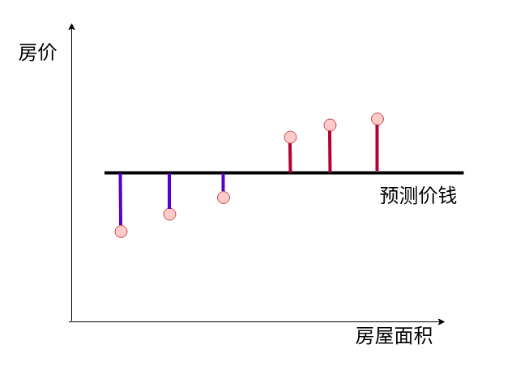
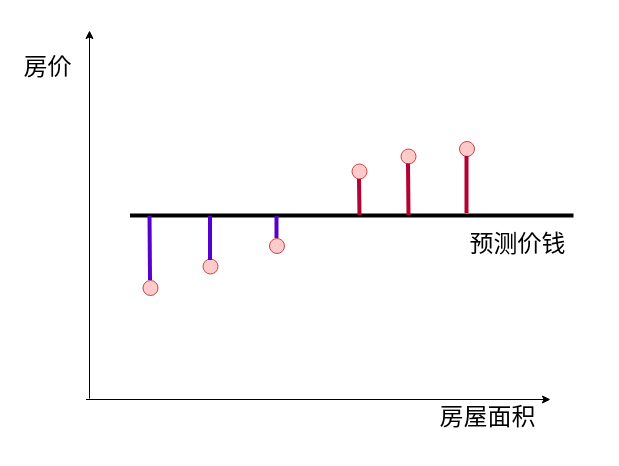
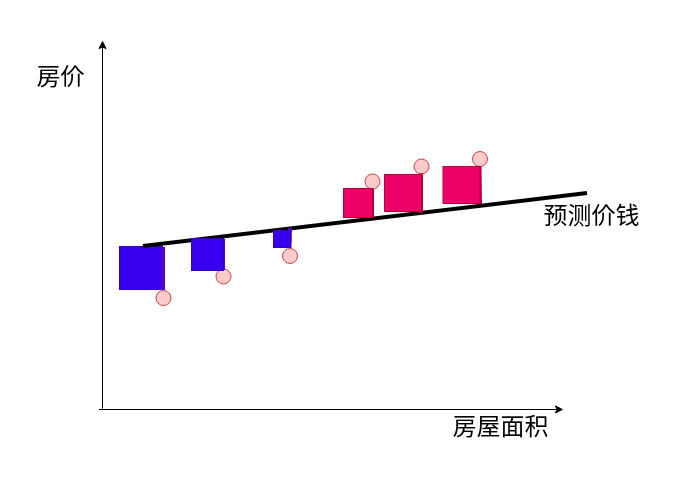
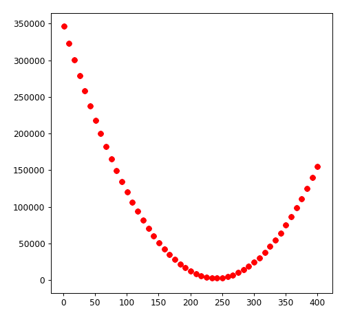
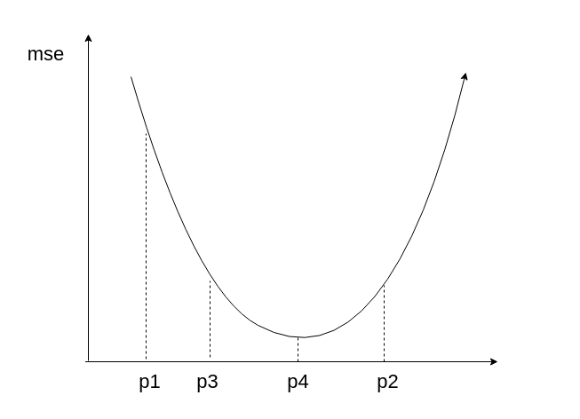
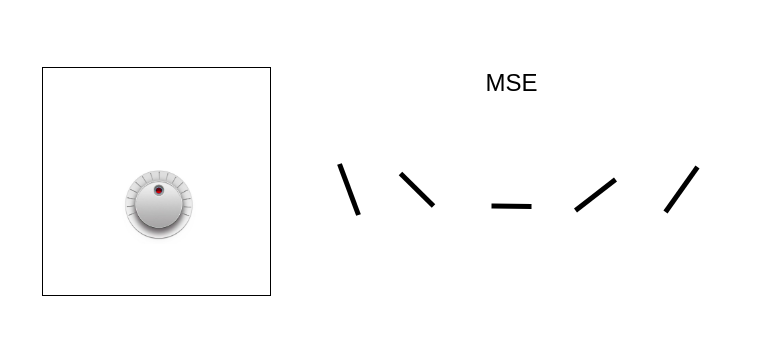

02-MAE vs MSE¶
MAE： mean absolute error 最小绝对差
MSE： mean square error 最小均方差
上面的统计方法是采用，最小绝对差的方式统计的， 思考这种方法的缺陷
- 第四个小板凳
| 面积 | 预测价 | 真实价 | 差价 |
|---|---|---|---|
| 80 | 246.5 | 200 | -46.5 |
| 95 | 246.5 | 230 | -16.5 |
| 104 | 246.5 | 245 | -1.5 |
| 112 | 246.5 | 247 | 0.5 |
| 125 | 246.5 | 259 | 12.5 |
| 135 | 246.5 | 262 | 15.5 |
总计误差（绝对值），93万

预测价246和246.5 看不出来差异了， 有没有什么好的办法呢？ mse是解决方案。
- 引入平方差(第四个小板凳)
| 面积 | 预测价 | 真实价 | 差价 | 平方差 |
|---|---|---|---|---|
| 80 | 246.5 | 200 | -46.5 | -46.5^2=2162.25 |
| 95 | 246.5 | 230 | -16.5 | -16.5^2=272.25 |
| 104 | 246.5 | 245 | -1.5 | -1.5^2=2.25 |
| 112 | 246.5 | 247 | 0.5 | 0.5^2=0.25 |
| 125 | 246.5 | 259 | 12.5 | 12.5^2=156.25 |
| 135 | 246.5 | 262 | 15.5 | -15.5^2=240.25 |
差值的平方和为： 2162.25+272.25+2.25+0.25+156.25+240.25=2833.5
- 引入平方差(第三个小板凳)
| 面积 | 预测价 | 真实价 | 差价 | 平方差 |
|---|---|---|---|---|
| 80 | 246 | 200 | -46 | -46^2=2116 |
| 95 | 246 | 230 | -16 | -16^2=256 |
| 104 | 246 | 245 | -1 | -1^2=1 |
| 112 | 246 | 247 | 1 | 1^2=1 |
| 125 | 246 | 259 | 13 | 13^2=169 |
| 135 | 246 | 262 | 16 | 16^2=256 |
差值的平方和为： 2116+256+1+1+169+256=2799
综上所述： 第三个小板凳的准确度更好一些。
直观看一下mae和mse的区别¶


mse对数据更加敏感一些。mse考察的是点，距离拟合直线形成的面积空间。
MSE计算公式¶
公式就是红色和蓝色正方形的面积
MSE=\dfrac {1}{n}\sum ^{n}_{i=i}\left( Predict_{i}-Actual_{i}\right) ^{2}
单一看mse没有意义，mse要对比这看才有意义， 对比mse可以对比两个直线哪个损失更少，更拟合数据点，
所以mse公式前面的\dfrac {1}{n}保留和去掉关系不大。
MSE=\sum ^{n}_{i=i}\left( Predict_{i}-Actual_{i}\right) ^{2}
绘制b的值和mse之间关系的图表¶
简单起见，先假设m=0 ,则 y=mx+b 简化为 y = b
1 2 3 4 5 6 7 8 9 | |

如果选好了b， mse就会非常小。
1 2 3 4 | |
上面的代码行不通，思考为什么？
b = 241， 242， 242.1 242.11 究竟小数点后多少的数是最好的？
b的值一次增加0.1还是0.01 还是0.001，b的范围究竟是多少？
如果同时要考虑m怎么办， 如果不只有一个变量mx呢？多一个变量需要多循环多少次？
mse和b的变化¶

观察p_1,p_2,p_3,p_4 对应的mse和b的值
当b接近最优值时p_4 最低谷点时， mse最小

mse调整器，左边旋钮决定了b的值， 请根据右边变化来调整旋钮的值，并说出理由。